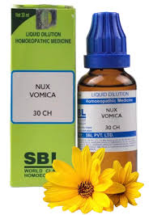
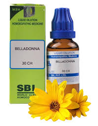
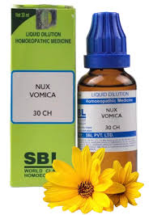
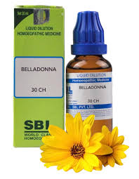

Arnica Montana
چوٹوں اور درد کے لئے مفید۔
Nux Vomica
نظام انہضام کے مسائل کے لئے۔
Belladonna
بخار اور سوجن کے لئے۔
ENT
بخار اور سوجن کے لئے۔
چوٹوں اور درد کے لئے مفید۔
نظام انہضام کے مسائل کے لئے۔
بخار اور سوجن کے لئے۔
بخار اور سوجن کے لئے۔